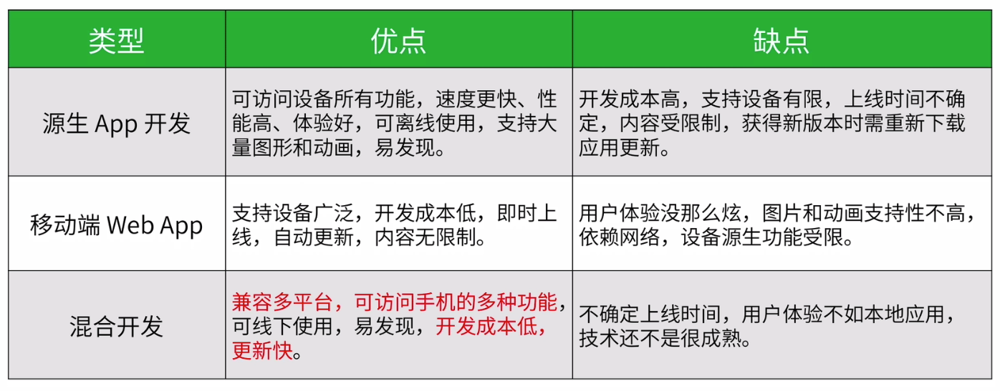
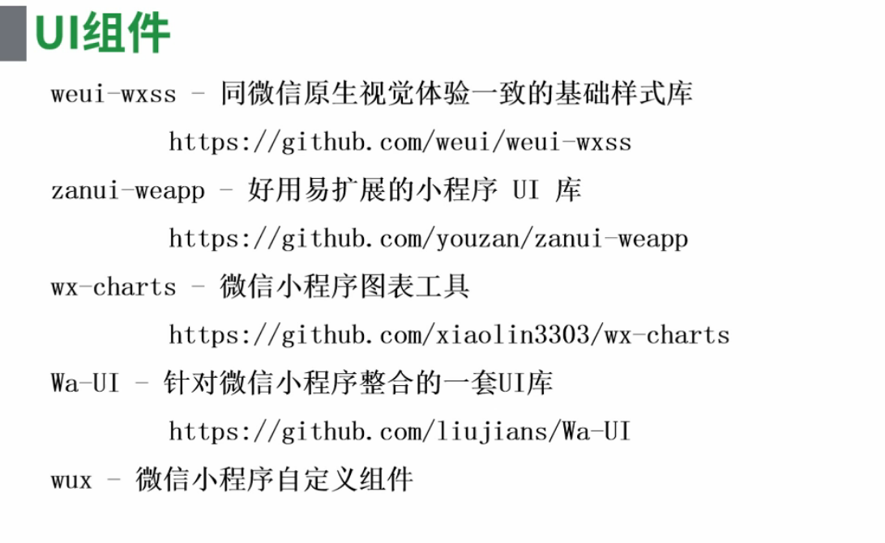
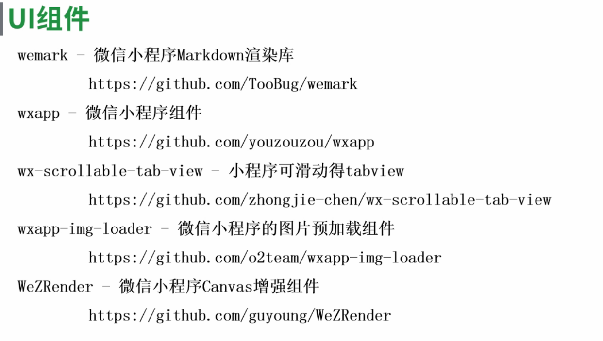

中大型电商小程序架构设计分析
一、小程序架构设计分析
1.三种开发对比

2.小程序特点：
- 1）用户：加载快，体验好，易发现，可传播，有沉淀
- 2）开发者：易学习，成本低，能力多，迭代快，跨平台
- 3）不足：API受限，功能受限，不可移植，与客户端原生功能体验相比有一定差距
3.小程序架构特点
- 1）基于Hybrid技术的混合开发：基于JSSDK的Hybrid技术
- 成熟的Web技术渲染
- 大量接口提供客户端源生能力
- 每个页面采用WebView独立渲染
- 内置组件提供大量功能
- 复杂组件采用客户端原生技术渲染
- 2）基于双线程模型的底层架构
- 小程序的逻辑层与渲染层分开在不同线程上运行（避免逻辑业务抢占UI渲染资源）
- 界面采用Web技术渲染，辅之以大量客户端源生能力（页面渲染等相关业务都放在WebView中）
- 创建单独线程执行JavaScript（业务逻辑都放在JavaScript解析引擎下，IOS是JavaScriptCore，Android是腾讯x5内核提供的JSCore环境）
- 双线程下的数据通信模型

- 3）基于Exparser框架的组件系统
- 小程序内置了一套组件框架Exparser，涵盖了小程序的基础功能，提供了自定义组件，便于开发者快速搭建出任何页面
- Exparser框架特点：基于ShadowDOM模型、可在纯JS环境下运行、高效，轻量，性能好
- 4）基于单向数据绑定的数据驱动

- 双线程模型下的页面渲染模型

- 5）基于模块化开发的代码管理机制
- 仅支持JS
- 默认支持CommonJS规范，也支持ES2015规范
- 以文件为单位，封装空间
- 封装变量，方法，防止全局作用域污染
二、“中大型电商”从0-1架构经历
1.前端知识体系图

2.架构前的思考
- 1）合理的技术选型
- 2）详细的需求分析
- 3）对业务功能的模块划分
- 4）工程化开发与项目快速迭代
- 5）降低开发、维护和迭代成本
- 6）良好的团队技术氛围
3.基本技术
- 1）语言基础：wxml，wxss，js等
- 2）性能优化：缓存，组件化等
- 3）网站安全：XSS注入等
- 4）设计模式：观察者模式，MVC，封装与继承等
- 5）框架筛选：针对不同业务对框架的选择
- 6）其他：工程化，自动化，代码托管等
4.需求分析
- 1）产品需求文档
- 2）产品设计效果
- 3）产品交互分析
- 4）产品项目开发
- 5）产品项目发布
- 6）产品项目迭代
5.业务模块划分
- 1）对公用的业务进行抽取，封装
- 2）利用模块化思想，基于封装，使其得以复用
- 3）对页面结构的划分，对样式的规划
- 4）对页面API的设计，对前端组件的规划
- 5）增强代码健壮性：可延展性，可读性，可维护性等等
6.前端优化
- 1）代码层面：code review or 代码规范
- 2）架构层面：可扩展性是否受到制约
- 3）协议层面：通过http(s)协议优化
- 4）用户层面：提高用户体验与页面流畅度
7.工程化
- 1）前端自动化基础：gulp or web pack
- 2）自动化的方向：开发=>测试=>发布
- 3）代码管理：SVN or Git
- 4）目录架构
- pages目录中，一个目录对应一个页面（包含四类文件）
- 不同的目录具有不同作用
- 通过对业务的划分，可以极大的提高开发效率与维护成本
- 对结构、样式、脚本、配置分离，使业务逻辑更加清晰
8.“网易严选+”架构设计


9.提高项目灵活性
- 1）前后端分离，制定合理的接口API
- 2）技术选型灵活，避免历史包袱，提高代码可维护性，制定开发规范
- 3）避免代码臃肿，合理的对业务分层
- 4）响应式开发项目
- 5）理清产品需求，不要盲目开发
业务应用：实现多小程序间的交互
一、中大型应用拆分多个小程序
A.拆分多个小程序应用场景分析
1.小程序对应用程序的限制
- 1）提交的代码2M存储空间
- 2）每个小程序本地存储10M
2.拆分成N个小程序，通过公众号关联在一起
3.关联规则：
- 关联入口：公众号管理后台->小程序->小程序管理
- 可关联同一主体的10个小程序，不同主体下的3个小程序
- 1个小程序可以关联500个公众号，一个月可以新增关联500次
- 公众号一个月可新增关联同主体的小程序10次、不同主体的小程序3次
4.关联步骤

B.拆分多个小程序嵌入HTML5页面
1.嵌入HTML5页面

2.web-view
- Hybrid混合开发模式中的网页容器
- 本质上是内核浏览器，在SDK中封装的组件
- 与APP间的通信依赖于相关的JSBridge
3.配置服务器地址
- 每个小程序帐号仅支持配置最多20个域名
- 每个域名仅支持绑定最多20个小程序
- 每个小程序一年内最多支持修改域名50次
4.web-view组件

二、MVVM设计模式
A.MVVM设计模式简介
1.MVC

2.MVP

3.MVVM

B.MVVM底层渲染过程
1.MVVM模式核心是数据双向绑定，共有两个方向

2.Angular

3.Vue

4.React

C.小程序与React、Vue对比
1.数据绑定的不同

2.插值语法的不同

3.修改数据的不同

4.事件冒泡的不同

5.总结
- 1）小程序目前不是一套完整的MVVM，模拟数据双向绑定，提供了“数据渲染”
- 2）小程序的JS逻辑层与视图层分散在两个不同的上下文环境中
- JS逻辑跑在JsCore中
- 视图层的渲染包括模板渲染、样式应用、事件派发却都在web-view中
- 数据对象（view-model）在两层间没有共享
三、自定义组件
A.自定义组件简介
1.小程序只提供部分组件，无法满足中大型电商小程序的需求，从基础库版本1.6.3开始，支持简洁的组件化编程
- 1）将页面内的功能模块抽象成自定义组件，以便在不同的页面中重复使用
- 2）也可以将复杂的页面拆分成多个低耦合的模块，有助于代码维护
- 3）所有自定义组件相关特性都需要基础库版本1.6.3或更高
2.创建自定义组件
- 1）类似于页面，4个文件组成
- 2）要编写一个自定义组件，首先需要在json文件中进行自定义组件声明，将component字段设为true，可将这一组文件设为自定义组件（通常将页面间可利用的组件放在components目录下）
- 3）在wxml文件中编写组件模板，在wxss文件中加入组件样式，它们的写法与页面的写法类似
3.组件构造器

4.使用自定义组件

B.拆分组件的原则&方案
1.组件拆分原则
- 1）多处使用的时候，为了利用结构，样式，以及功能，比方弹窗组件
- 2）代码块过大，放到单个组件中容易维护
- 3）对页面拆分成多个组件，方便管理与维护
2.组件的分类（React）
- 1）木偶组件：一个工具，不拥有数据及操作数据的action，给它什么数据就显示什么数据，给它什么方法，就调用什么方法
- 2）智能组件：它是数据的拥有者，且有操作数据的action，但是它不实现任何具体功能，会将数据和操作action传递给子组件，让子组件来完成UI或者功能，也就是项目中的各个页面
3.小程序中大多数选择木偶组件：更为轻量适用，更容易维护
4.放置组件
- 1）公有组件入根目录下的components目录下
- 2）私有组件放当前页面目录下
C.模态框组件设计开发实践
1.组件设计思路
- 1）是否业务相关：业务组件和基础组件
- 2）是否包含状态：智能组件和木偶组件
- 3）是否跨页面复用：公有组件和私有组件
四、通信
A.小程序中的通信
1.小程序通信能够解决哪些问题
- 1）解决页面与组件之间数据共享问题
- 2）解决组件之间数据共享问题
- 3）解决页面之间数据共享问题
2.整体架构

B.组件与页面通信
1.通信流程

2.Observer

C.组件间通信
1.组件关系

2.通信过程
- 1）兄弟关系

- 2）父子关系

D.页面间通信
1.方案一：本地存储、全局变量
- 1）app对象下的globalData
- 2）setStorage与getStroage

2.方案二：利用页面栈中的页面对象
- 1）页面栈
- 页面栈存储所有进入过的页面对象
- 通过页面栈获取所需的页面对象
- 在新的页面的生命周期中操作对象页面

3.方案三：发布订阅模式

五、多小程序交互
A.多小程序间的跳转
1.跳转目的：互相引流
2.小程序间形成完整的链路

3.跳转限制：基础库高于1.3.0；同一公众号下的小程序

4.API


B.状态一体化
1.状态一体化

2.浏览器可以用cookie实现
3.小程序特殊性：没有域名的概念；服务端的cookie在native中无法直接使用；不同小程序间环境隔离
4.一般处理方案

5.小程序中web-view与小程序的通信流程

6.完整帐号体系下的方案

7.安全性保证
- 1）所有请求走https，支持概率极低
- 2）跳转严格限制，微信授权，即同一公众号下
- 3）小程序间跳转在微信内完成，地址对外不可见
高性能实践：性能问题及优化方案
一、常见的性能问题
A.常见的性能问题概述
1.性能问题特征：
- 1）范围广：性能问题无处不在，且大多是非功能性的
- 2）不易发现：性能问题大多比较隐蔽，不易被发现的
- 3）影响较大：轻则影响用户体验，重则导致财务损失
- 4）优先级高：性能问题一旦发现，优先解决
2.四个层面
- 1）代码层面：点击穿透问题，影响用户体验
- 2）算法层面：循环嵌套阻塞程序进行
- 3）架构层面：渲染数据量大，页面卡顿
- 4）网络层面：数据请求慢，影响页面展现
3.小程序常见性能问题

B.如何查看性能报告
1.监督排查性能问题的一般步骤：
- 1）为了提高用户体验，我们借助工具监控与排查性能问题
- 2）为提升开发效率，通过测试排查方法来发现隐藏的性能问题
2.小程序中的性能分析工具
- 1）ADB（Android Debug Bridge）
- 2）性能面板（真机上进度小程序的开发版，查看真机下的CPU、内存、耗时数据等）
- 3）远程调试面板（与Chrome中的profiles功能相似）
3.使用远程调试面板
- 1）远程调试面板是功能最全，最强大的一种调试工具，也是我们在工作是最常使用的一种调试工具
- 2）Memory面板

- 3）Summary视图

- 4）Comparison视图

- 5）Containment视图

- 6）Statistics视图：堆快照的总的分布统计情况
- 7）分析小程序中上的JavaScript函数在执行过程中的CPU消耗信息

- 8）Chart视图：按时间先后顺序显示的火焰图

- 9）Heavy视图

- 10）Tree视图

C.常用性能指标
1.白屏时间：用户打开小程序开始，到小程序第一屏不为白屏的时间
2.首屏时间：用户打开小程序开始，到小程序第一屏渲染完成的时间
- 1）首屏，用户所使用的真实设备屏幕的大小
- 2）重要的性能指标：
- <=5s，优秀
- 5s<展开时间<=10s，合格
- >10s，不可接受，用户体验差
3）影响首屏时间的因素：
- 组件性能和结构：页面内容多少、图片大小、是否调用第三方内容等
- 网络因素：DNS解析时间，建立连接时间，SSL握手时间，发出请求时间，重定向时间，第一个包时间，剩余包时间，内容下载时间等
3.首屏组件个数：在首屏页面中包含的组件个数
4.整页时间
- 1）整个网页加载完成的总时间
- 2）如果网站首页大小=首屏大小，那么整页时间=首屏时间
- 3）如果首屏加载完成后，还有很多内容持续加载，那么整页时间=从页面加载出第一个元素开始，到整个网页被加载完成的时间
5.页面切换时间：指小程序从一个页面切换到另一个页面（新页面首屏渲染完毕）时，所用的时间
6.DNS时间：从小程序终端访问请求开始，到小程序终端获得最终访问主机IP地址的时间
7.其他相关指标
- 1）连接时间：小程序和服务器建立TCP连接所消耗的时间
- 2）后端时间：服务端收到请求后，处理请求消耗的时间
- 3）后端响应时间：小程序发出HTTP请求后，服务器进行响应以及后台处理的时间
- 4）请求数：页面加载过程中，发出的HTTP请求的数目
- 5）页面大小：页面以及页面所需的资源所占的存储空间
二、性能优化方案
A.性能优化作用
1.什么是性能优化：小程序的性能优化是在不影响小程序正确运行的前提下，使之运行得更快，完成特定功能所需的时间更短
2.性能优化设计思想
- 1）系统层面：设备硬件、设备操作系统、微信软件平台、小程序架构等等
- 2）设计层面：模块划分、组件设计、算法选择、编程规范、编译器选项等
- 3）代码层面：熟悉框架、降低代码耦合度、分享无用代码块等
3.性能优化的作用
- 1）更好的用户体验
- 2）避免用户流失
- 3）提高用户流量
- 4）避免经济损失
- 5）适配不同性能的系统
- 6）排队隐藏的BUG
4.性能优化的注意事项
- 1）性能优化是项目开发的一个方面，有时它会和项目的其他要求产生冲突：
- 可读性：性能优化不能影响可读性，看起来不怎么漂亮的代码，没有人愿意维护
- 模块化：性能优化往往需要打破模块的边界，想想这是否值得
- 可移植：隔离相关的代码，尽量使用统一的API
- 可维护：许多性能优化的技巧，会导致后台维护代码的人崩溃
- 2）性能优化需要在上述的几个要求之间做也抉择，不能一意孤行
5.性能优化的目标：
- 1）时间性能：减小系统执行的时间
- 2）空间性能：减小系统占用的空间
B.性能优化方案
1.小程序启动优化
- 减少立即执行代码数量
- 避免执行高开销的堵塞代码
- 部分业务逻辑纳入生命周期钩子函数中
- 试用缓存策略
2.数据更新优化
- 提交最小变更数据
- 维护最小粒度数据
- 合并多次数据提交
- 正确使用生命周期钩子函数
3.资源优化
- 对请求的代码资源进行压缩（勾选开发者工具中的“上传代码时，压缩代码”选项）
- 合并资源请求个数（资源打包处理）
- 通过外链式引入资源
- 提取公共组件，提高代码利用率
- 提取公共样式，避免重复设置
- 删除不必要的功能
4.图片资源优化
- 对图片资源压缩
- 合理选择图片存储格式
- 使用外链式图片资源
- 使用base64技术，对图片资源打包
- 对于超大图片，优先加载预览图片
- 对于icon图片，使用字体图标
- 对图片使用预加载技术
- 对图片使用延迟加载技术（懒加载）
5.首屏加载优化
- 异步请求提前（将ready中的请求移入onload方法中）
- 利用缓存技术（例如本地缓存）
- 避免白屏，预先渲染提示方案
- 及时对需要用户等待的操作进行反馈，避免用户以为小程序卡顿，无响应
6.事件优化
- 减少事件数量
- 使用事件委托技术
- 减少data-前缀的自定义属性携带的数据（事件对象要携带）
7.交互优化
- 使用节流模式，阻止高频事件循环触发
- 避免在高频事件中，实现复杂的业务逻辑
- 避免在循环中以及高频事件中多次请求数据
8.其他优化
- 使用自定义组件，组件是完整独立的，数据更新时，只会在当前组件内部更新
- 避免不当使用onPageScroll等高频事件
- 移除项目中无用的代码
版本迭代：上下线流程和版本兼容
一、上下线计划
A.小程序分工与版本迭代流程
1.小程序项目成员结构

2.版本迭代流程

B.小程序的发布流程与权限分配
1.开发版本
- 本地开发调试，可以发布开发版本
- 需要开发者权限
2.体验版本
- 自测通过，开发者可以使用开发者工具发布体验版本
- 需要开发者权限
- 访问体验版小程序需要体验者权限
3.为什么需要体验版本
- 开发版本针对的是开发者和自己，有时效性，可能同时存在多个开发版本，而体验版本只有一个并且有固定的二维码，更适合在团队内测试和体验
- 在小程序正式发布前，通过体验版本在更大范围内进行功能测试反馈，对提升发布质量很有帮助
4.审核中的版本：体验版可以提交审核，需要小程序后台登录权限与开发管理权限
5.线上版本：微信团队审核成功后，即可提交发布，需要小程序登录与开发管理权限
6.小程序权限集与角色分类

7.小程序权限控制

C.发布模式
1.全量发布：更新所有用户中的微信小程序
2.分阶段发布：通过比例来控制使用最新版小程序版本的用户比例
3.发布模式对比

D.小程序版本回退与下线
1.版本回退

2.优雅下线：需要暂停服务权限
3.版本号规范

4.版本号升级规范

5.分支命名规范

6.新特性开发流程

7.Bug修复流程

二、版本兼容
A.小程序版本兼容问题概述
1.版本兼容问题出现的原因：微信小程序在功能不断升级的过程中经常会发布一些新的组件和API，但是这些组件和API仅支持高版本，低版本的微信无法使用，因此需要进行兼容处理
2.常见兼容问题举例

3.版本兼容问题一般解决办法

B.小程序基础库
1.基础库：需要在业务代码之前加载的代码库
2.小程序基础库
- 渲染层：WebView基础库
- 逻辑层：Jscore，AppService基础库
3.小程序的基础库会被提前内置在微信客户端：
- 1）降低业务小程序的代码包大小
- 2）可以单独修复基础库中的BUG，无需修改到业务小程序的代码包
C.小程序基础库更新策略
1.基础库版本号：遵循semver规范，Major.Minor.Patch，Major重大版本发布，Minor月度版本发布，Patch修正版本
2.小程序版本号获取方法：wx.getSystemInfo和wx.getSystemInfoSync
3.基础库更新过程
- 1）小程序的基础版本库升级依赖微信客户端发布，客户端发布会先携带上一个稳定基础库版本，在通过灰度的方式推送新版基础库到客户端上
- 2）举例说明

D.小程序版本兼容注意点
1.wx.canIUse(String)，String参数说明：
- 1）${API}.${method}.${param}.${options}

- 2）${component}.${attribute}.${option}

风险把控：相关安全问题及对策
一、安全与防范
A.常见安全问题
1.SQL注入

2.跨站脚本攻击-XSS

3.CSRF跨站请求伪造

B.安全防范方案
1.SQL注入
- 1）永远不要信任用户的输入，对用户的输入进行校验，限制长度，对特殊符号做转换
- 2）永远不要使用动态拼装sql，可使用参数化的sql等
- 3）不要把机密信息直接存放，对密码和敏感的信息加处理
- 4）异常信息应该给出尽可能少的提示，最好使用自定义的错误信息
2.跨站脚本攻击
- 1）小程序wxs请求做了很多限制，如：不能调用小程序提供的API等
- 2）小程序页面中插入组件将作为文本渲染
- 3）小程序组件动态设置请求地址类属性的时候，会将组件<>转码
- 4）小程序对已经编码的数据，使用类型为text的rich-text组件渲染
- 5）小程序在使用rich-text引入html标签元素时，样式中注入js语句无法执行
- 6）小程序在中rich-text富文本组件仅支持部分受信任的元素
3.CSRF防御

二、异常与监控
A.常见异常
1.异常：程序不可避免会出现运行时错误，例如定义的变量忘记使用var等关键字，此时程序就会抛出异常错误，中断后续代码的继续执行，造成糟糕的用户体验，为了确保程序运行良好，我们就要清楚这类异常错误
2.常见异常
- 1）.json文件用来定义程序配置，语法错误会抛出异常
- 2）.wxml文件用来定义程序结构，语法错误会抛出异常
- 3）.wxss文件用来定义程序样式，语法错误会抛出异常
- 4）.js文件用来定义程序脚本，语法错误或者运行时出现错误会抛出异常
B.异常处理方案
1.一般语法错误以及运行时错误，小程序都会在Console里面显示对应的错误信息，以及出错的文件、行号、堆栈信息
- 1）JSON异常处理：当我们为小程序定义配置信息的时候，定义的配置在程序运行之前就会被解析，因此会直接将请求错误抛出
- 2）WXML异常处理：当我们为小程序使用组件定义页面结构的时候，定义的组件出现 语法错误，在程序启动的时候就会被解析，因此在控制台中，直接将语法异常抛出
- 3）WXSS：当我们为小程序使用wxss为页面定义样式的时候，定义的样式出现语法错误，在程序启动的时候就会被解析，因此在控制台中，直接将语法异常错误抛出
- 4）JavaScript异常处理：当我们通过JavaScript为小程定义脚本行为的时候，定义的脚本出现语法错误，在程序启动的时候就会被解析运行，因此会在控制台中，直接将语法异常错误抛出
C.异常监控收集
1.本地开发时捕获
- 1）try,catch方案
- 可以针对某个代码块使用try,catch包装，这个代码块运行时出错时能在catch块里边捕捉
- 即使出现错误，也是不会影响后续代码执行的，但是效率也要下降许多，只能检测内部代码错误
- 2）window.onerror方案
- 可以通过window.addEventListener(“error”, function(eve){})，这个方法能捕捉到语法错误跟运行时错误，同时还能知道出错信息，以及出错的文件，行号，列号
- 注意：逻辑层不存在window对象，因此逻辑层AppService测无法通过window.onerror来捕捉异常
- 3）onError回调方案
- 可以通过为应用程序构造器App订阅onError方法，能捕捉到语法错误跟运行时错误，同时还能知道出错的信息，以及出错的文件，行号，列号
- 注意：fail方法只能检测该内置方法执行时候的问题，无法检测方法外部的问题
- 4）内置接口fail方法方案
- 当我们执行内置的方法的时候，有时候因错误会执行失败，小程序为捕获这类错误，提供了fail方法，我们可以订阅fail方法监听这类错误
- 注意：该方法只能输出错误，但是不能保证错误后面代码顺利执行
2.四种方案对比

3.线上运行时捕获
- 我们在基础库里捕捉到的运行时异常会上报一我们的服务器，然后产生监控曲线，通过这个监控图来观察基础库的运行情况
- 注意：我们也可以在小程序后台：运维中心=>错误查询 查看相关数据
4.自定义线上异常捕获：自己服务器接收异常请求信息
开放能力：支付、消息推送等
一、电商类小程序下单流程剖析
A.下单需求分析
1.微信支付对商户开放的所有页面，对用户使用的api，都是由appid和mch_id成对使用的

2.普通模式：最常规的普通模式，适用于有自己开发团队或外包开发商的直连商户收款。开发者申请自己的appid和mch_id（商户平台=>产品中心=>开发配置=>商户号），两者需具备绑定关系，以此来使用微信支付提供的开放接口，对用户提供服务

3.服务商模式：第三主服务商申请自己的服务号appid，并通过该服务号appid申请服务商mch_id，以此获得微信支付服务商能力。再通过服务商mch_id为所服务的特约商户申请创建微信支付sub_mch_id，创建好的sub_mch_id默认和服务商的mch_id建立父子授权关系。以此来使用微信支付提供的开放接口，对特约商户及用户提供服务。同时，微信支付为服务商模式下的每一条“mch_id-sub_mch_id父子授权关系”上，都开放了一些开发配置能力供服务商配置，包括不限于支付授权目录、推荐关注的appid、sub_appid等。服务商模式下又分普通服务商和银行服务商两大类，除资金清算能力不同，在帐号模型和使用上，普通服务商和银行服务商并无区别

- 1）普通服务商：最常规的第三方模式，第三方帮特约商户申请商户号并为他进行支付开发，第三方本身不经手资金，支付成功后资金直接进入特约商户商户号

- 2）银行服务商：有清算资质的银行机构可申请成为微信支付银行类服务商，开通后可通过api创建特约商户号并为其进行支付开发，资金直接进入银行类服务商帐户，由银行服务商为特约商户进行资金清算

4.业务场景结合

5.开通微信支付

B.支付流程与验证
1.对比JSAPI或JSSDK

2.业务流程

3.登录流程时序

4.获取openid

5.统一下单


6.签名算法

7.微信支付

8.支付通知

9.查询支付结果

C.搭建https服务器
D.支付实战
1.相关模块
- crypto，实现md5
- axios，发送异步请求
- os，操作系统相关模块
- xml2js，将xml数据转换成js
二、消息推送、分享个人二维码实践
A.消息推送机制（一）
1.基于微信的通知渠道，我们为开发者提供了可以高效触达用户的模板消息能力，以便实现服务的闭环并提供更佳的体验
- 1）模板推送位置：服务通知
- 2）模板下发条件：用户本人在微信体系内与页面有交互行为后触发
- 3）模板跳转能力：点击查看详情仅能跳转下发模板的该帐号的各个页面
2.下发条件：小程序不能随意给用户推送【服务通知】，只有当用户跟小程序发生互动行为后，才具备推送通知的能力

3.推送注意事项：用户基本都不会关闭微信的消息推送，所以相比较App的推送和短信推送来说，小程序的推送触达率会高很多。但如果做的太过分了，反而会自食其果

4.处罚说明

5.推送消息流程

6.微信公众平台配置

7.模板消息接口

8.获取小程序模板库标题列表

9.组合模板并添加至帐号下的个人模板库

10.获取帐号下已存在的模板列表

11.删除帐号下的某个模板

12.发送模板消息

13.发送模板消息错误码

14.标题要求
- 标题不能存在相同
- 意思不能存在过度相似
- 必须以“提醒”或“通知”结尾
- 不能带特殊符号、个性化字词等没有行业通用性的内容
- 必须不能体现具体服务场景
- 不对有涉及营销相关内容，包括不限于：消费优惠类、购物返利类、商品更新类、优惠券类、代金券类、红包类、会员卡类、积分类、活动类等营销倾向通知
15.关键词要求

B.消息推送机制（二）
C.个人二维码
1.两种二维码：通过后台接口可以获取小程序做任意页面的二维码，扫描该二维码可以直接进入小程序对应的页面。目前微信支持两种二维码，小程序码，小程序二维码
2.为了测试二维码，可以使用开发工具的编译调试所获得的二维码
3.生成二维码接口

4.access_token码：access_token是公众号的全局唯一接口调用凭据，开发者需要进行妥善保存。access_token的存储至少要保留512个字符空间。access_token的有效期目前为2个小时（未来会有调整），需定时刷新，重复获取将导致上次获取的access_token失效

5.获取AppID和AppSecret

6.A类型接口

7.B类型接口

8.C类型接口

三、客服会话实践
A.客服会话机制
1.使用客服消息

2.下发消息

3.调用客服消息接口发送客服消息

4.网页版客服工具

5.使用客服工具

6.切换客服状态：在线、离开、退出
7.接收消息

8.发送消息

9.使用规范
- 1）不允许恶意诱导用户进行可能触发客服消息下发的操作，以达到可向用户下发客服消息的目的
- 2）不允许恶意骚扰，下发与用户发送的消息没有关联的、对用户造成骚扰的消息
- 3）不允许恶意营销，下发内容涉嫌虚假夸大、违法营销信息
- 4）不允许使用客服消息向用户下发虚假、色情、暴力等违反固定法律规定的信息
B.案例实战（一）
1.进入客服会话：在页面中使用<button open-type=“contact” />可以显示进入客服会话按扭
2.发送客服消息

3.下发消息请求参数

4.下发消息返回码说明

5.第三方接收文本消息

6.第三方接收图片消息

7.第三方接收卡片消息

8.第三方接收会话事件

模拟实战：【网易微专业】小程序

